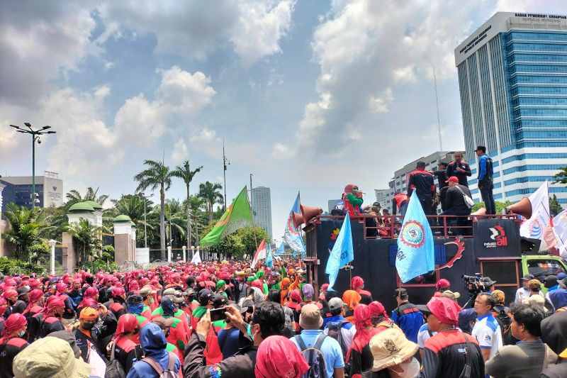

Bab-2 Teks Eksplanasi
Apakah kamu pernah membaca teks tentang proses terjadinya bencana alam di media cetak? Jika pernah, itu merupakan salah satu contoh dari teks eksplanasi. Memangnya apa sih teks eksplanasi itu?
Coba cek lagi deh materi pelajaran Bahasa Indonesia di kelas 8, jangan-jangan kamu sudah lupa ya? Padahal, materinya tidak jauh berbeda lho dengan yang ada di kelas 11. Kalau mau mengingat-ingat materinya lagi, cek penjelasan artikel berikut ini yuk tentang Teks Eksplanasi Kelas 11.
Pengertian Teks Eksplanasi
Teks eksplanasi adalah teks yang berisi tentang proses ‘mengapa’ dan ‘bagaimana’ kejadian-kejadian alam, sosial, ilmu pengetahuan, budaya, dan lainnya dapat terjadi. Suatu kejadian baik itu kejadian alam maupun kejadian sosial yang terjadi di sekitar kita, selalu memiliki hubungan sebab akibat dan proses. Lalu, gimana ya caranya kita tahu bahwa sebuah teks itu disebut sebagai teks eksplanasi? Yuk, kenali ciri-ciri dan struktur teks eksplanasi!
Ciri-ciri Teks Eksplanasi
Ada beberapa ciri-ciri teks eksplanasi, antara lain:
- Informasi yang dimuat berdasarkan fakta (faktual).
- Hal yang dibahas, yaitu suatu fenomena yang bersifat keilmuan atau berhubungan dengan ilmu pengetahuan.
- Sifatnya informatif dan tidak berusaha memengaruhi pembaca untuk percaya terhadap hal yang dibahas.
- Fokus pada hal umum (generik), bukan partisipan manusia. Contoh: tsunami, banjir, gempa bumi, hujan, dan lainnya.
Struktur Teks Eksplanasi
Sebuah teks bisa dikategorikan sebagai teks eksplanasi jika memiliki struktur sebagai berikut ini.
1.Identifikasi FenomenaDi bagian ini, sebuah teks eksplanasi menjelaskan tentang gambaran umum fenomena/peristiwa alam yang akan dibahas. Poinnya bisa mengangkat tentang proses bagaimana fenomena alam tersebut bisa terjadi.
2.Rangkaian KejadianSetelah mengetahui secara umum fenomena yang akan dibahas, pada bagian ini dijelaskan tentang penyebab dan akibat yang ditimbulkan dari fenomena tersebut. Kamu bisa melakukan deskripsi dalam beberapa paragraf terkait sebab dan akibatnya. Bagian ini disebut juga dengan deretan penjelas.
3.InterpretasiInterpretasi dalam teks eksplanasi dapat dikatakan sebagai ulasan atau penarikan kesimpulan. Kamu bisa memberikan tanggapan atau pernyataan terkait fenomena yang diangkat dalam teks tersebut.
Kaidah Kebahasaan Teks Eksplanasi
Ada pun dalam menyusun teks eksplanasi perlu memperhatikan kaidah kebahasaan berikut ini:
- Menggunakan kalimat pasif
- Menggunakan konjungsi kasual dan waktu
- Terdapat istilah ilmiah
- Menggunakan kata kerja material dan rasional
- Bersifat informatif
Contoh Teks Eksplanasi
Demonstrasi Massa
Pernyataan Umum:
Akhir-akhir ini demonstrasi kerap terjadi hampir setiap waktu dan terjadi di berbagai tempat. Bahkan, demonstrasi sudah menjadi fenomena yang lumrah di tengah-tengah masyarakat kita. Menanggapi fenomena tersebut, seorang kepala daerah menyatakan bahwa penyebab demonstrasi dan anarkisme tidak lain adalah faktor laparnya masyarakat. Lantas ia mencontohkan rakyat Malaysia dan Brunei yang adem ayem, lantaran kesejahteraan mereka terpenuhi maka demonstrasi di negara-negara itu jarang terjadi.
Tentu saja komentar tersebut menyulut reaksi para mahasiswa. Mereka memprotes dan meminta sang bupati mencabut kembali pernyataannya. Para mahasiswa tidak terima dan tidak merasa memiliki motif serendah itu. Mereka berpendirian bahwa demonstrasi yang biasa mereka lakukan murni untuk memperjuangkan kebenaran dan melawan kemungkaran yang terjadi di hadapan mereka.
Eksplanasi:Demonstrasi massa tidak selalu disebabkan oleh urusan perut, bahkan banyak peristiwa yang sama sekali tidak didasari oleh motif itu. Dalam kaitannya dengan kebutuhan manusia, Abraham Maslow membaginya ke dalam beberapa tingkatan. Kebutuhan yang paling mendasar adalah makan dan minum. Sementara itu, yang paling puncak adalah kebutuhan akan aktualisasi diri.
Namun demikian, pada umumnya demonstrasi massa justru lebih didasari oleh kebutuhan tingkatan akhir itu. Masyarakat berdemonstrasi karena membutuhkan pengakuan dari pemerintah ataupun pihak-pihak lain agar hak-hak dan eksistensi mereka diakui. Karena merasa dibiarkan, hak-haknya diingkari, bahkan dinistakan, kemudian mereka berusaha untuk menunjukkan jati dirinya dengan cara berdemonstrasi.
Banyak fakta dapat membuktikannya. Demonstrasi massa pada awal reformasi di negeri ini pada tahun 1997-1998, bukan dilakukan oleh rakyat miskin ataupun orang-orang lapar. Justru hal itu dilakukan oleh warga dari kalangan menengah ke atas, dalam hal ini adalah mahasiswa dan golongan intelektual. Belum lagi jika merujuk pada kasus-kasus yang terjadi di luar negeri. Dalam beragam skala (besar atau kecil), demonstrasi bukan hal aneh lagi bagi negara-negara Eropa. Demonstrasi yang mereka lakukan sudah tentu tidak didorong oleh kondisi perut yang lapar karena mereka pada umumnya dalam kondisi yang sangat makmur.
Interpretasi:Dengan fakta semacam itu, nyatalah bahwa kemiskinan bukanlah penyebab utama untuk terjadinya gelombang demonstrasi. Akan tetapi, fenomena tersebut lebih disebabkan oleh kemampuan berpikir kritis dari warga masyarakat. Mereka tahu akan hak-haknya, mengerti pula bahwa di sekitarnya telah terjadi pelanggaran dan kesewenang-wenangan. Mereka kemudian melakukan protes dan menyampaikan sejumlah tuntutan. Apabila faktor-faktor itu tidak ada di dalam diri mereka, apapun yang terjadi di sekitarnya, mereka akan seperti kerbau dicocok hidung: manggut-manggut dan berkata "ya" pada apapun tindakan dari pimpinannya meskipun menyimpang dan bahkan menzalimi mereka sendiri
Nah, demikianlah materi Teks Eksplanasi yang bisa Saya bagikan. Semoga bermanfaat untuk Anda semuanya.
Nah, kalau kamu ingin lebih banyak tahu soal Teks Eksplanasi lagi? Yuk, bergabung di Mediapintar.com, kamu bisa belajar banyak hal di sana dan menjadi peneliti hebat, lho!.